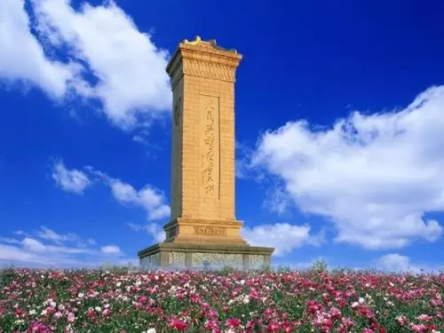

第四版
第四版

“细草芊芊的绿茵上，沾濡了清明的酒气，遗下了游人的屐痕车迹”。广袤的华夏大地上，每一寸山河都凝聚了英雄的魂灵，他们似尚方宝剑，魂魄所在之处，就是和平之光普照之地，每个时代都有这样一批人守护，但英雄正气毫不过时，铭记是为了更好地践行，我们一起走进英雄的岁月，感怀故人，感怀那永不磨灭的记忆；致敬英雄，致敬滚滚洪流中的逆行者。
建国史上的“英雄之路”
中华民族为建立独立自主的国家付出了无以估量的损失，我们的建国史上也有很多的英雄人物，值此清明之际，翻阅到家乡的祭奠新闻，我的思绪回到了二十年来最熟悉的地方——中学时必经之路，它就叫做“英雄路”，顾名思义，这条路上有无数的英雄足迹。这个故事被称作“洞口事件”，老师们也经常给学生讲述——那是1945年8月，山西省的汾阳城是日军在晋中的一个大据点，八路军晋绥独三旅十七团三连奉命解放汾阳城，当时还有阎锡山的晋军虎视眈眈，与八路军争夺解放权，对外还有日军的阻力。连长薛春荣等67名战士负责进行解放斗争，薛连长当时已被任命为3营的副营长，但他为了坚守使命，立下了不顺利解放汾阳市不调离阵地的军令状。29日，战士们以城墙西北角的一个洞口为突击点，本来是有可能以最小的牺牲实现解放，但由于其他势力的错综勾结，他们很快被堵在城墙的洞口内，进口处与出口处均受到日军阻击，日军又向洞内投放毒烟，导致洞内战士们壮烈牺牲，六十七烈士就永远沉睡在了这一方土地上，每每驻足于此，崇敬与感动之情便油然而生。时至今日，我看到学校的老师依然会带领学生们祭奠先烈，也十分感动，我相信来到这里的每一位学子心中也总会感恩前人的付出，这一寸寸土地上，凝聚了故人的血泪奋斗史！
海天长留的最可敬的“暗号”
从20年前起，4月1日在中国的历史上留下了独特的意义，吾辈铭记，则英雄不悔！“81192，国产航母已备好，请返航”，一声声焦急的传唤声后，领空那头传来王伟视死如归的坚定的回复——“81192收到，我已无法返航，你们继续前进”！33年的灿烂生命，15年的事业生涯，一生的坚守与热爱，我们的“海空卫士”为了祖国的荣耀，为了保护珍贵的战机，为了守护自己的梦想，用自己的生命抗争！这一天后，我终于深切地体会到了和平的蓝天下，实则暗流涌动，只有真正的强大，才能保护这一方百姓，20年来我们忍辱负重，我们的民族坚持奋进，20年后我们创造了一个又一个奇迹，我们也终于可以掌握核心技术，自信地立于世界舞台。“81192”不仅仅是战机的编号，更是可敬的海空卫士王伟的“代号”，也是警示后辈勿忘英雄，继续前进的“暗号”。
火场逆行的“国家赤子”
橙色战衣和特制的防护服、头盔是他们最信任的伙伴，他们的背后是人民，前面是火海，只要一踏上“战场”，他们就会将危险留给自己，将安全留给人民！他们是四川凉山的消防队员，一批年轻的逆行者，他们生前没有英雄的称号，但却承担了英雄的责任。2019年3月30日18时许，四川省凉山州木里县雅砻江镇立尔村发生森林火灾，由于地势环境复杂，森林消防员深入火场，人力扑火，4月1日突发严重的情况，27名消防队员和3名地方干部群众不幸遇难。他们堪称中国的脊梁，他们的亲人承担了更多，每一次远行，留给亲人的只有背影，火场燃烧了寸寸草木，燃烧了消防员的年轻身体，更燃起了“不负人民”的赤子之心！我们不仅仅需要铭记英雄，更应该融入他们的精神里，反思灾难，让逆行者们多一些生还的机会！
2021年2月19日，微博上账号“蜡笔小球”发布诋毁英烈的内容，值得我们反思，英烈用生命换来我们的和平生活，他们的人格不应该被亵渎，英雄不负人民，人民更不应忘记英雄，时代的洪流在不断滚滚向前，英雄的精神永不消逝！